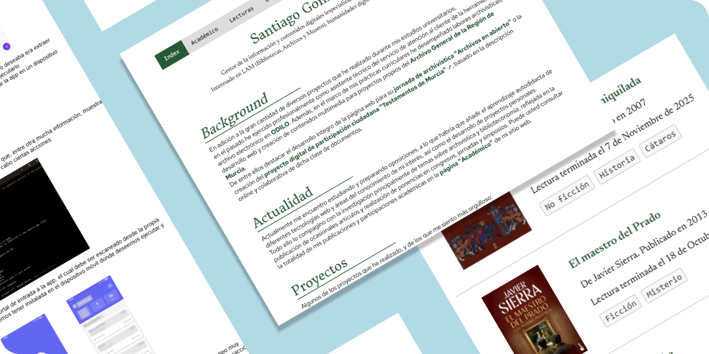
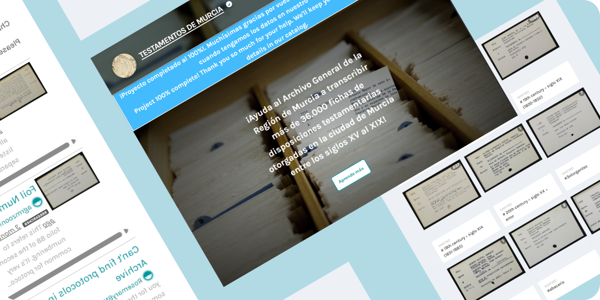
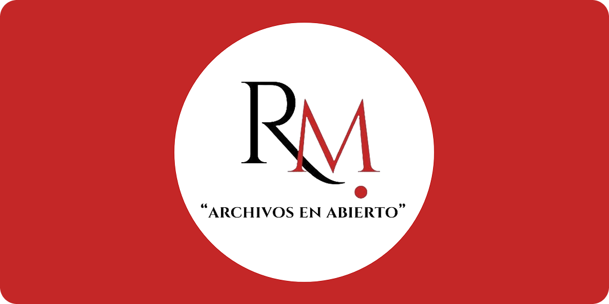
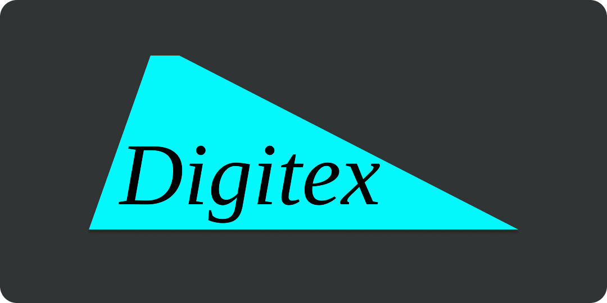
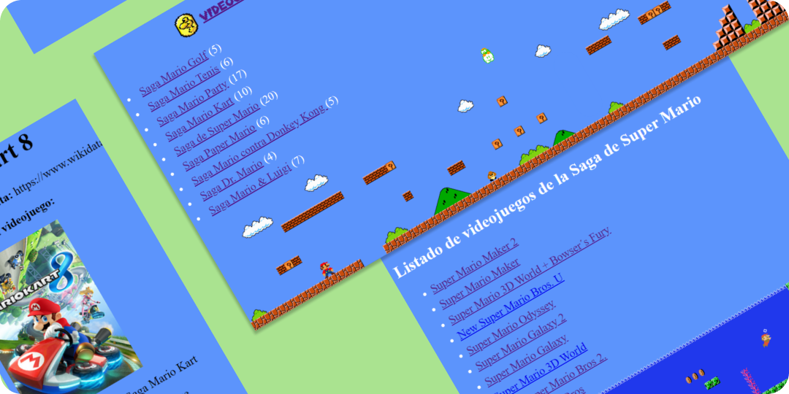
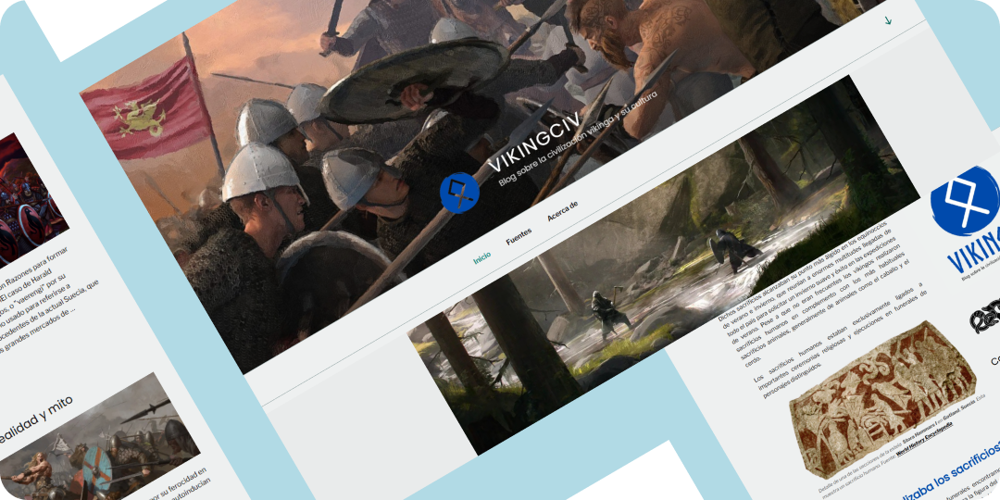
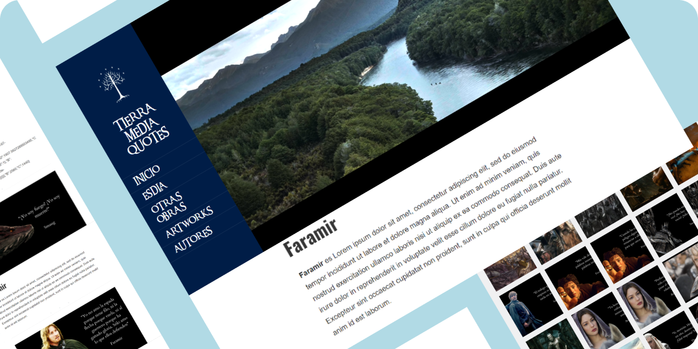
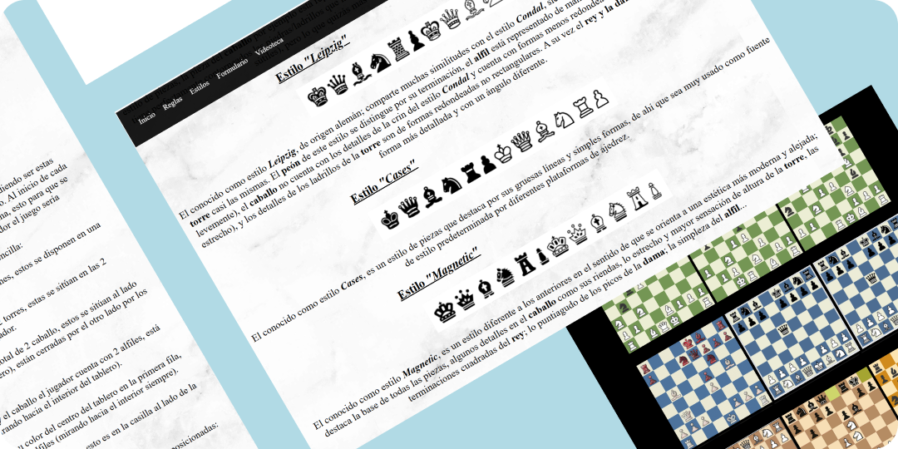

Santiago González Pérez
Bibliotecario y gestor de la información y contenidos digitales
Interesado en LAM (Bibliotecas, Archivos y Museos), humanidades digitales, desarrollo web y documentación
Actualidad
Actualmente ocupo el cargo de bibliotecario en la biblioteca del Instituto Teológico de Murcia, labor que compagino con el estudio y preparación de oposiciones, a lo que habría que añadir el aprendizaje autodidacta de diferentes tecnologías web y áreas del conocimiento de mi interés, así como el desarrollo de proyectos personales.
También realizo investigación, principalmente de temas sobre archivística y biblioteconomía, reflejada en la publicación de ocasionales artículos y realización de ponencias en congresos, jornadas y simposios varios.
Puede usted consultar la totalidad de mis publicaciones y participaciones académicas en la página "Académico" de mi sitio web.
Background
En adición a la gran cantidad de diversos proyectos que he realizado durante mis estudios universitarios,
en el pasado he ejercido profesionalmente como asistente técnico del servicio de atención al cliente de la herramienta de archivo electrónico en ODILO.
Además, en el marco de mis prácticas curriculares he desempeñado labores archivísticas, de desarrollo web y creación de contenidos multimedia para proyectos propios del Archivo General de la Región de Murcia.
De entre ellos destacar el desarrollo íntegro de la página web para su jornada de archivística "Archivos en abierto" o la creación del proyecto digital de participación ciudadana "Testamentos de Murcia" ↗, basado en la descripción online y colaborativa de dicha clase de documentos.
Proyectos
Algunos de los proyectos que he realizado, y de los que me siento más orgulloso:

Mi sitio web personal (2025)

Testamentos de Murcia (2024)
Proyecto digital de participación ciudadana basado en la indexación colaborativa online.

Archivos en abierto (2024)
Sitio web para la I Jornada de Archivística del AGRM: "Archivos en abierto".

Digitex (2023)
Revista electrónica sobre digitalización documental.

Mario Data (2023)
Dataset de todos los videojuegos de Mario transformado en web.

Vikingciv (2023)
Blog divulgativo sobre la civilización vikinga.

Tierra Media Quotes (2021)
Blog temático sobre la obra de J. R. R. Tolkien, enfocado a recoger citas de sus personajes.

Mundo ajedrez (2021)
Mi primera página web: una página web temática sobre ajedrez.
Tecnologías
Estas son las principales tecnologías que he usado para desarrollar mis proyectos, tanto pasados como futuros:


Servicios
De forma individual e independiente ofrezco los siguientes servicios digitales:
◆ Páginas web personales
◆ Proyectos digitales de participación ciudadana/ciencia colaborativa
◆ Revistas electrónicas
◆ Contenido multimedia para redes sociales
Si está interesado en obtener más información o contratar alguno de mis servicios no dude en ponerse en contacto conmigo a través de mi correo electrónico (gonzalezperezsantiago0@gmail.com).